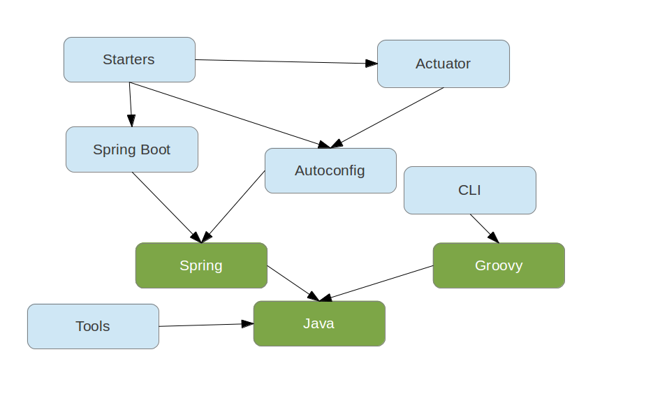

Dave Syer, Phil Webb, 2013
Twitter: @david_syer, @phillip_webb
Email: [dsyer, pwebb]@gopivotal.com
(Introduction to Spring Boot)
@EnableAutoConfigurationSpring Boot:
spring-* projects)An opportunity for Spring to be opinionated

app.groovy:
@Controller
class Application {
@RequestMapping('/')
@ResponseBody
String home() {
'Hello World!'
}
}
then
$ spring run app.groovy
Application.java:
...
@Controller
@EnableAutoConfiguration
public class Application {
@RequestMapping("/")
@ResponseBody
public String home() {
"Hello World!";
}
public static main(String[] args) {
SpringApplication.run(Application.class, args);
}
}
...then
$ mvn package
$ java -jar target/*.jar
(or use gradle equivalents)
SpringApplication: convenient way to write a main() method that loads a Spring context@EnableAutoConfiguration: optional annotation that adds stuff to your context, including...EmbeddedServletContainerFactory: added to your context if a server is available on the classpathCommandLineRunner: a hook to run application-specific code after the context is createdJarLauncher was added to the JAR file@EnableAutoConfiguration
annotation creates a whole Spring context
SpringApplication binds its own bean properties to command line
arguments, and then adds them to the Spring Environment, e.g.
$ java -jar target/*.jar --server.port=9000
Just put application.properties in your classpath, e.g.
application.properties
server.port: 9000
Just put application.yml in your classpath
application.yml
server:
port: 9000
Both properties and YAML add entries with period-separated paths to
the Spring Environment.
MineProperties.java
@ConfigurationProperties(prefix="mine")
public class MinePoperties {
private Resource location;
private boolean skip = true;
// ... getters and setters
}
application.properties
mine.location: classpath:mine.xml
mine.skip: false
Set
spring.config.name - default application, can be comma-separated
listspring.config.location - a Resource path, overrides namee.g.
$ java -jar target/*.jar --spring.config.name=sagan
Activate external configuration with a Spring profile
application-development.propertiesapplication.yml
defaults: etc...
---
spring:
profiles: development,postgresql
other:
stuff: more stuff...
Set the default spring profile in external configuration, e.g:
application.properties
spring.profiles.active: default,postgresql
Extend the demo and see what we can get by just modifying the classpath, e.g.
spring.thymeleaf.*, e.g.
spring.thymeleaf.prefix:classpath:/templates/ (location of templates)spring.tjymeleaf.cache:true (set to false to reload templates
when changed)IDialect beansthymeleafViewResolverSpringTemplateEnginedefaultTemplateResolverDataSource and JdbcTemplateWe like launchable JARs, but you can still use WAR format if you prefer. Spring Boot Tools take care of repackaging a WAR to make it executable.
If you want a WAR to be deployable (in a "normal" container), then you
need to use SprinBootServletInitializer instead of or as well as
SpringApplication.
Adds common non-functional features to your application and exposes MVC endpoints to interact with them.
/metrics, /health, /trace, /dump, /shutdown, /beans/infoIf embedded in a web app or web service can use the same port or a different one (and a different network interface).
java.util.loggingLoggingApplicationContextInitializer sets it all upApplicationContext CreationApplicationContextInitializer implementations and enable in
application.properties@EnableAutoConfiguration BehaviourMETA-INF/spring.factories entry for
EnableAutoConfigurationUses standard Java META-INF/services scanning
CompilerAutoConfiguration: add dependencies and importsCommandFactory: add commands via a custom CommandFactory in META-INF/servicesE.g. can add script commands (written in Groovy)
$ spring foo ...
Looks for foo.groovy in ${SPRING_HOME}/bin and
${SPRING_HOME}/ext by default
server.port (see ServerProperties bean)EmbeddedServletContainerCustomizer - all
instances get a callbackEmbeddedServletContainerFactory (replacing
auto-configured one)Motivation: existing solutions for executable JAR are not very robust; executable WAR is very tricky to create.
Response: JarLauncher and WarLauncher with specialized
ClassLoader implementations that can find resources in nested JARs
(e.g. lib/*.jar or WEB-INF/lib/*.jar)
Create an executable archive (JAR or WAR)
Maven plugin (using spring-boot-starter-parent):
$ mvn package
Gradle plugin:
apply plugin: 'spring-boot'
$ gradle repackage
Spring Test (MVC)SpringApplication is an opinionated creator of an
ApplicationContext, but most of the behaviour is encapsulated in
ApplicationContextInitializer implementations. To reproduce the
behaviour of you app in an integration test it is useful to duplicate
those features you can use the corresponding initializers.
Example if you have externalized configuration:
@RunWith(SpringJUnit4ClassRunner.class)
@ContextConfiguration(classes = IntegrationTestsConfiguration.class,
initializers = ConfigFileApplicationContextInitializer.class)
public class IntegrationTests {
// Normal Spring Test stuff
}
/
#